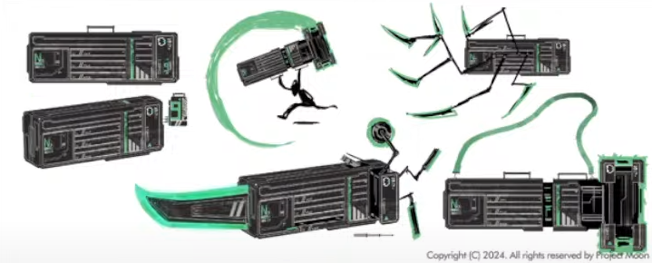

Pouvoir
Arme
Chéromancie. Amateur
Electrical programming
Ce premier est sort est des plus simple. Un sort qui se base sur la manipulation d'un courant continue.
Mais ce courant est très faible, il pourrait tout au plus engourdir un membre si on y est trop exposé.
La vrai force de ce sort réside dans sa précision et les connaissance de Garion. Bien que simplette, elle est loin d'être idiote.
Elle est même doué lorsqu'il s'agit de programmation et de mécanique et ce sort lui est très utile.
Car il lui permet de reprogrammer directement des appareils par la simplement exposition à ce courant.
Même si les explication in fine, sont plus complexe. Garion envoie un courant dans les circuit pour ouvrir ou fermer les transistors et donc le reprogrammer.
C'est tout le principe de ce sort.

Metallica
Ce second sort ressemble beaucoup au premier, mais cette fois-ci avec moins de précision et plus de d'intensité, même si encore une fois,
il ne peut causer que des engourdissement des membres si on s'y retrouve exposé trop longtemps. Dans ce cas, ce sort,
permet surtout par un champ électrique de déplacer deux élément métallique l'un par rapport à l'autre.
En somme rendre magnétique des éléments conducteur pendant de courts instants. Ce qui permet à Garion d'utiliser des objets mécanique sans même qu'ils ait de moteur,
à condition que les mécanismes soit conducteur.
Les contrainte sont qu'elle ne peut utiliser ce sort sur des éléments trop grand. S'il essaie de le faire sur une voiture,
la voiture ne fera qu'attirer les éléments magnétique autour sans faire bouger la dite voiture.
Mais elle pourra facilement mettre en marche les pistions du moteur de cette voiture sans batterie.
De plus en augmentant suffisamment son intensité sur le bout de ses doigts, Garion peut souder ces des métaux.

IEM
Ce troisième et dernier sort est des plus simple, Garion génère un fort champ d'onde électromagnétique dans un rayon de 27 m tout autour d'elle.
Un champ suffisamment puissant pour brouiller et dérégler les appareils électroniques dans ce rayon, les siens y compris.
Lorsqu'elle utilise ce sort, IEM et Metallica devienne inutilisable pendant 3 tours d'action rp. Un sort à double tranchant en somme.

Les grands contrainte de son pouvoir est sa distance et son inefficacité qu'il soit défensif et offensif.
Mais Garion compense ses contraintes par son esprit de mécanicienne.
Garion possède une arme, ou plutôt une valise à outil. Que l'on compare souvent à un couteau suisse
Oui oui, une sorte de valise sur un mètre vingts de long pour cinquante centimètres de large et vingts-cinq de profondeur.
Cette valise est un simple condensé de technologies et surtout une arme et une boîte à outil. Qui contient tourne vis, clefs à molette, cutter, jeu de vis etc.
Garion reste avant tout, une mécanicienne. Cette valise est faites dans une armature en titane et des mécanismes en alliage d'aluminium. Très résistant et des mécanisme conducteur.
Cette valise possède en tout trois arme. La partie arrière de laquelle peut sortir une lame. La partie avant qui peut se modifier pour donner la forme d'un marteau à la valise,
et de petites lames et scies attachées à des bras mécaniques cachés dans les compartiments et et truc. Et c'est là que le cher pouvoir de Garion trouve son utilité.
Il lui permet d'utiliser cette armes sans aucune restriction. Et le plus impression et l'IA qui réside à l'intérieur de cette boîte de conserve.
Une simple intelligence qui est complètement anecdotique, mais tout de même présente avec ses réflexions digne d'une machine dénotant particulièrement avec la mentalité de Garion.
La valise possède aussi une caméra rotative dans un compartiment sur le dessus qui peut se surélevé pour permettre à Christophe, cette IA de voir.
Cette valise comporte aussi un certain nombre de rangement, une place bien optimiser.
